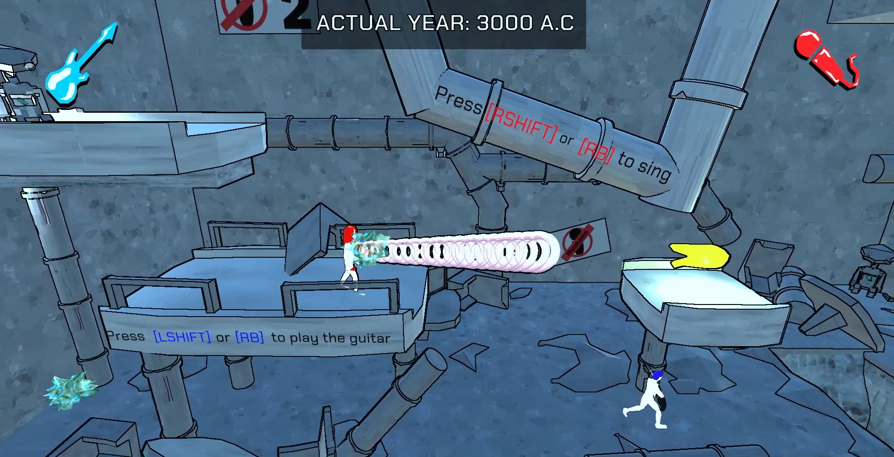
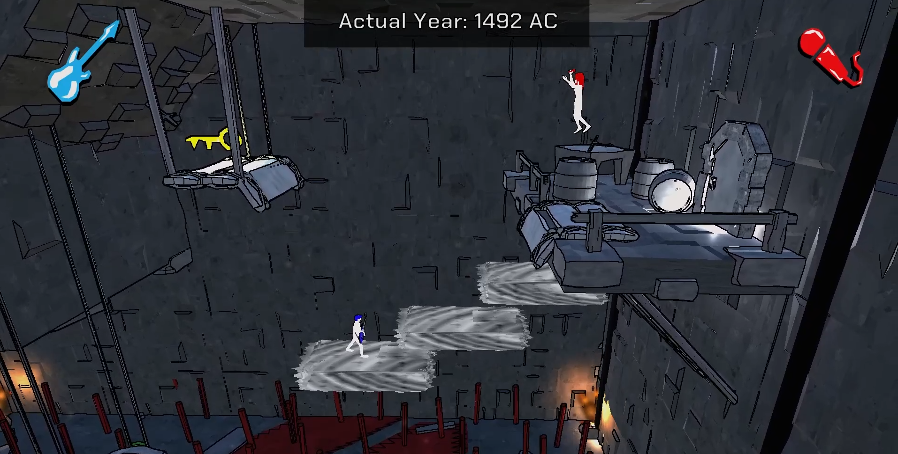
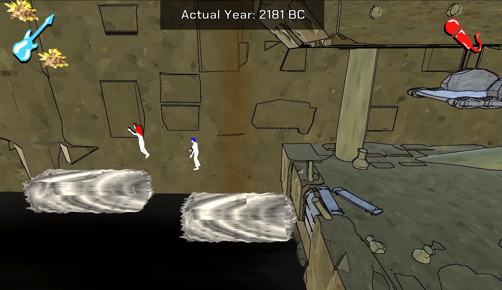
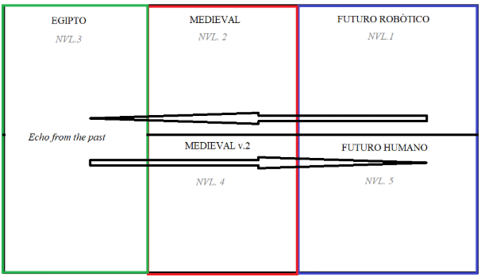
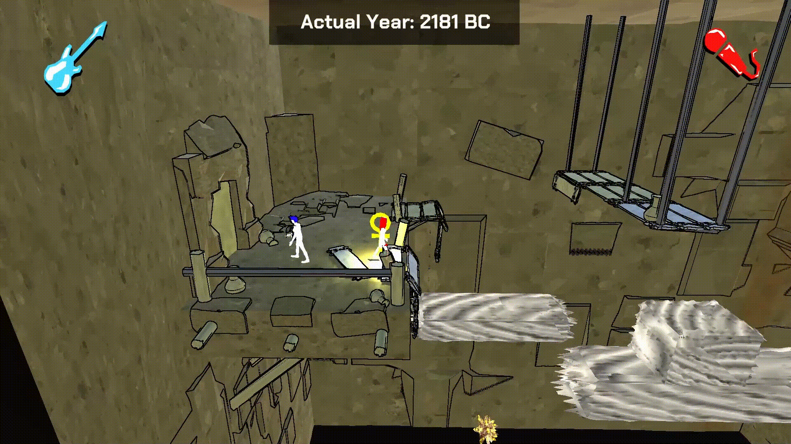
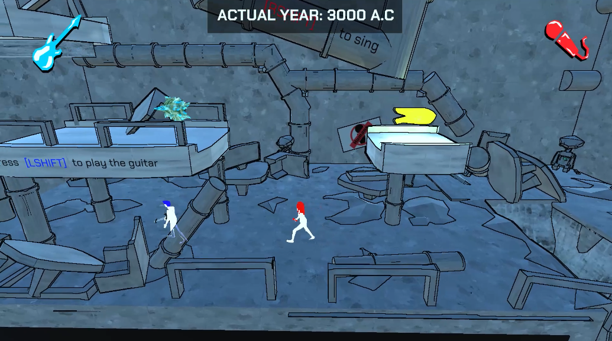
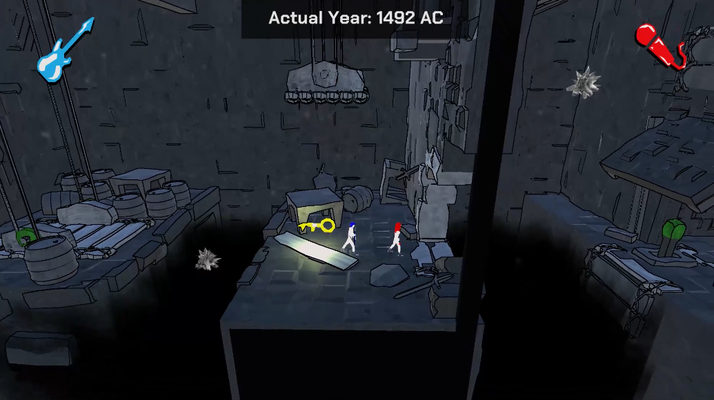
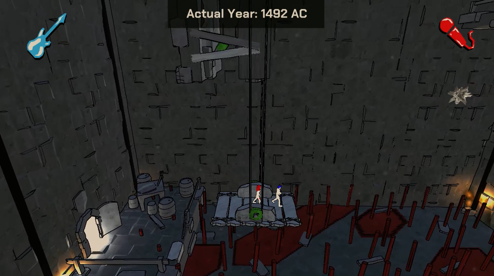
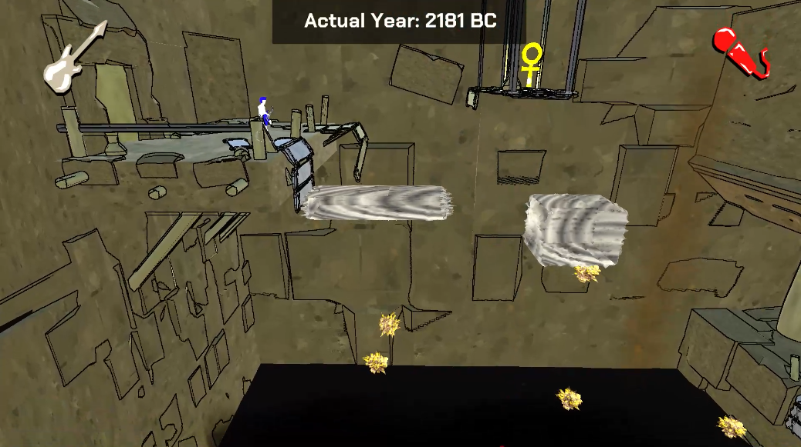

Echoes From The Past
Environment Storytelling
Figma 2D Layout
Blockout (Unity)
Unity Developer
Development time: 7 days (Game Jam)
Team: 5 people
The Game

Abilities

- Player 1: Reveal invisible objects using sound waves to make them vibrate. These objects will remain visible for 2.5 seconds, and the player can use this ability every 2 seconds.
- Player 2: Create sound waves that bounce to push objects, which bounces only once, and can have only one active echo at a time (the echo disappears on the second bounce or if a character “hears” it).
Challenges
Time travel through levels

With that idea, I just had to display the levels the following way to make them all come together:

Era-travel knowledge
When we started protoyping, I found out that with the logical reading order was not enough for the players to understand that they were traveling through time. Because of that, I work alongside the team to bring elements that helped the recognition of traveling through past:
- Door thresholds: In the first builds of the games, we didn't think about doors. Players reached the following level by crossing a mere gap in the wall. When we thought about doors, we realized that each era would have different kinds that the player will have to interact with: futuristic doors would open vertically with a card, while medieval doors would open with a classic key in a more traditional way. Since they were the ones grabbing the keys and interacting with doors, they felt owners of those actions and perceived they were on different periods.
- UI: The easiest (but ugliest) solution was to put a UI displaying the current year the characters were. We would have liked to work more on this solution, but since it was a short-time game jam, we prioritized player-understanding over elegance.
- Different era, different color palette: If players traveled through time, they would feel they are in a different era. The artist made sure that each era had their own assets, but this was not enough. The color palette was as important as asset-making: in futuristic levels, white dominate; in the medieval period dark-gray colors prevail; while in the Ancient Egypt, a yellow-brown palette takes over the levels.
- Audio: When the players crossed each travel door, a ticking audio played, indicating time was moving.




Interactive elements
Since we were using simple color palettes and we wanted colors to prevail in each period, we found out that everything looked the same. Players did not know which assets were interactable and which weren't. To solve that, we used individual colors to guide those interactions and relate game elements between them:
- Yellow: Emissive yellow helped the player clearly identify the interactive element that they need to search on every level to complete it: keys!. Adding a point light made it even more important.
- Green: This color is used to relate elevators with each lever, so players could stablish a relationship form the beginning: if the green lever is triggered, the green elevator will get active.
- Red: This one radiated danger. The clear example are the deadly spikes. Since there is only one level where we use spikes to deafeat the user, we needed to show somehow that they were deadly.



Invisible platforms
For the Player 1's abilty to make sense we needed invisible platforms, but if they were fully invisible the player would simply spam the ability all the time and the game would become boring and annoying. It was one of the main dynamics, so we could not simple left the issue aside. The solution was simple: show some beat on where those platforms were located, so players knew where they were and could solve the level thinking their next moves.

Levels breakdown
 Tutorial: This was the starting point to present the narrative and basic controls of the players (not yet their unique abilities).
The characters are sorrounded by anti-human signs and, at the same time, they see the lasts green plants that they will encounter in the future.
From the mechanics perspective, they are teached to move and to user keys to open doors.
Tutorial: This was the starting point to present the narrative and basic controls of the players (not yet their unique abilities).
The characters are sorrounded by anti-human signs and, at the same time, they see the lasts green plants that they will encounter in the future.
From the mechanics perspective, they are teached to move and to user keys to open doors.
 Level 1 (Robotic Future): Here, jumping and the unique ability of each player is teached within a safe environment: they cannot lose the key or die by using wrong their abilities.
Player 1 needs to use their ability so Player 2 can reach a good position to use theirs. They should be careful though, because if the first player use the ability again, they'll block Player 2 ability's utility by creating a wall in the way.
Level 1 (Robotic Future): Here, jumping and the unique ability of each player is teached within a safe environment: they cannot lose the key or die by using wrong their abilities.
Player 1 needs to use their ability so Player 2 can reach a good position to use theirs. They should be careful though, because if the first player use the ability again, they'll block Player 2 ability's utility by creating a wall in the way.
 Level 2 (Medieval Era): For the first time, the players are sorrounded by real hazards, so they'll have to coordinate to avoid dying and losing the key.
First, Player 1 will need to reveal the floor beneath Player 2 so they can push the key. However, Player 1 needs to be fast or the key will fall in the void.
After they get the key, a new dynamic is introduced: Player 2 can push levers to activate moving platforms. When they do this the first time, they discover the echo can ricochet.
Level 2 (Medieval Era): For the first time, the players are sorrounded by real hazards, so they'll have to coordinate to avoid dying and losing the key.
First, Player 1 will need to reveal the floor beneath Player 2 so they can push the key. However, Player 1 needs to be fast or the key will fall in the void.
After they get the key, a new dynamic is introduced: Player 2 can push levers to activate moving platforms. When they do this the first time, they discover the echo can ricochet.
 Level 3 (Ancient Egypt): Player 2 needs to ricochet their echo to trigger the lever. This dynamic was presented before and is the only action they can do to advance, so they can't miss it.
After that, the main idea of this level was that both players depended on Player 1. The whole level is empty unless they reveal the whole invisble platforms.
Level 3 (Ancient Egypt): Player 2 needs to ricochet their echo to trigger the lever. This dynamic was presented before and is the only action they can do to advance, so they can't miss it.
After that, the main idea of this level was that both players depended on Player 1. The whole level is empty unless they reveal the whole invisble platforms.
 Interlude: Narrative stop to recover the Echo From The Past and return to the future. When they do so, the floor breaks and they are forced to keep playing. From now on, they can only go to the right, towards the future.
Playing the firsts builds, we realized players wouldn't jump down, since it looked like they would die. Because of that, we made the floor tighter so when they entered they'd fall automatically to show there is not any threat.
Interlude: Narrative stop to recover the Echo From The Past and return to the future. When they do so, the floor breaks and they are forced to keep playing. From now on, they can only go to the right, towards the future.
Playing the firsts builds, we realized players wouldn't jump down, since it looked like they would die. Because of that, we made the floor tighter so when they entered they'd fall automatically to show there is not any threat.
 Level 4 (Ancient Egypt): The first block they encounter is an inaccessible lever. In previous levels, all elements were aligned so the echo could richochet, but now the Player 1 will need to reveal a wall to make it happen.
After that, they'll get on an elevator with a gap in the wall next to it, so Player 2 will need to temporize to shoot their echo and push the key down. In this level, the key drops in a safe environment.
Level 4 (Ancient Egypt): The first block they encounter is an inaccessible lever. In previous levels, all elements were aligned so the echo could richochet, but now the Player 1 will need to reveal a wall to make it happen.
After that, they'll get on an elevator with a gap in the wall next to it, so Player 2 will need to temporize to shoot their echo and push the key down. In this level, the key drops in a safe environment.
 Level 5 (Medieval Era): Going forward to time, players reach the Medieval Era again. Since they are reaching almost the end, I wanted them to feel in real danger before the calm of the last level.
They see deadly spikes on the floor, but all is static until they get on the elevator. Then the platform filled with spikes start going up. They are now against the clock. The coordination and comunication is now even more important than before.
Level 5 (Medieval Era): Going forward to time, players reach the Medieval Era again. Since they are reaching almost the end, I wanted them to feel in real danger before the calm of the last level.
They see deadly spikes on the floor, but all is static until they get on the elevator. Then the platform filled with spikes start going up. They are now against the clock. The coordination and comunication is now even more important than before.
 Level 6 (Human Future): The futuristic period is messy, all is destroyed. Later on they will discover that they accomplished their mission: humans are again populating Earth, but they also destroyed it.
Players will have to use all the mechanics that they learnt over the levels to complete this one: reveal wall to ricochet the echoes, temporize the revealing of floors to avoid the key from falling into the void and perform a final push to get the key.
Level 6 (Human Future): The futuristic period is messy, all is destroyed. Later on they will discover that they accomplished their mission: humans are again populating Earth, but they also destroyed it.
Players will have to use all the mechanics that they learnt over the levels to complete this one: reveal wall to ricochet the echoes, temporize the revealing of floors to avoid the key from falling into the void and perform a final push to get the key.